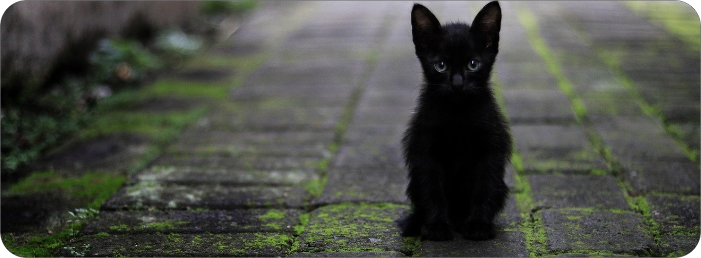

Sobre nós
Só no Brasil há mais de 30 milhões de animais abandonados!
A estimativa é de que, em cidades de grande porte, exista um cachorro para cada cinco habitantes. Destes, 10% estão em situação de rua. O que muitos não sabem é que, além de ganhar companheirismo, ter um bichinho pode influenciar na saúde física e mental das pessoas: estudos feitos pelo Centro de Controle e Prevenção de Doenças (CCD) do Instituto Nacional de Saúde (NIH) dos Estados Unidos apontam que pessoas que convivem com algum animal de estimação tendem a ter uma diminuição nas chances de sofrer um ataque do coração e outras doenças cardiovasculares, contando ainda com diminuição no nervosismo.
Pensando nisso, nós do Pata Aqui resolvemos ajudar esses bichinhos a encontrar um lar e ajudar você a encontrar amor.
